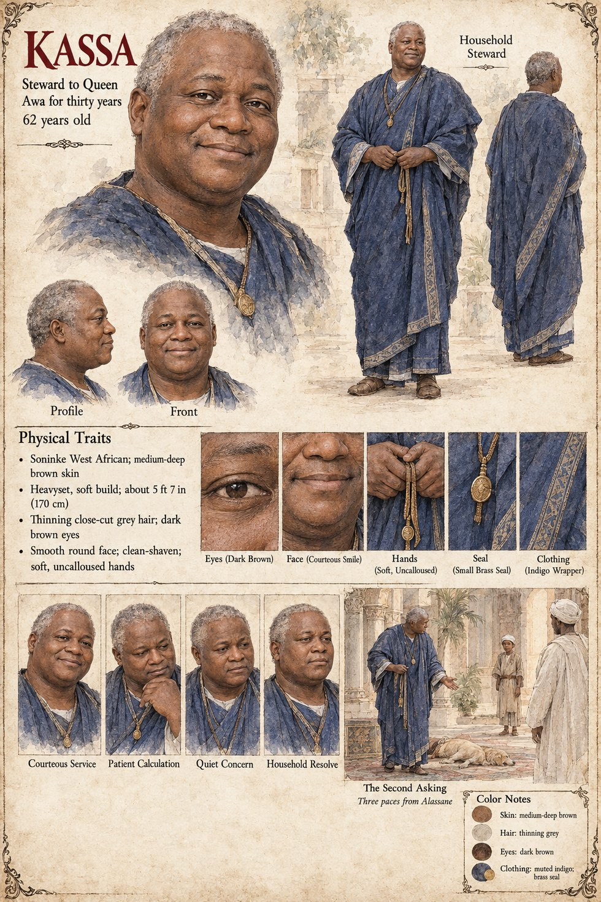

Kassa
Steward to Queen Awa for thirty years · soft-handed · 62 years old on his sheet
Awa's steward, a soft-handed man who had served her thirty years and who understood, better than she did, exactly what she had asked. When Awa, who never says the word for it, tells him to see that the animal is quiet on the day, he goes to the lower town, to the woman who sells sleep by the pinch, and pays her price in gold; he then finds the youngest hand in the palace kennel, a boy of fifteen named Tuma, whose mother's roof leaks, and puts into his palm a coin heavier than anything the boy has ever held, with a message that a friend of the palace would be glad if the dog's evening fish were seasoned, for six nights, with a little of something that would help it rest. The twist of folded leaf is handed over by his servant at the kitchen gate.
At the Sitting Elders' meetings he is the one who made the proposal sound like a courtesy: that the dog be the whole of the Second Asking, since the ancestors had spoken through it once. The elders, who had never been offered a sign with its own hole already cut, agree on the fourth night. At the same meeting he puts forward a second proposal, with the same courtesy, that the dog be set down three paces from Alassane, on the ground that an animal frightened by crowds should not be made to walk far, and no one thinks to examine it. The dog trots twenty-seven paces to Sekou. When the war comes he leaves with his mistress in the closed litter, and in the last of his years, after the dog is killed, he is the voice of a household that no longer had a son, saying that the wardens had murdered their own sign to hide a fraud. The manuscript does not say how he dies.
The manuscript gives his office, his hands and his service; no age, face or build. The sheet's age of 62, heavyset 5 ft 7 in (170 cm) soft build, thinning close-cut grey hair, dark brown eyes, smooth round clean-shaven face with a courteous smile, small brass seal and indigo wrapper are its own, as are its panels Courteous Service, Patient Calculation, Quiet Concern and Household Resolve and its scene The Second Asking, captioned Three paces from Alassane.
“a soft-handed man who had served her thirty years and who understood, better than she did, exactly what she had asked”